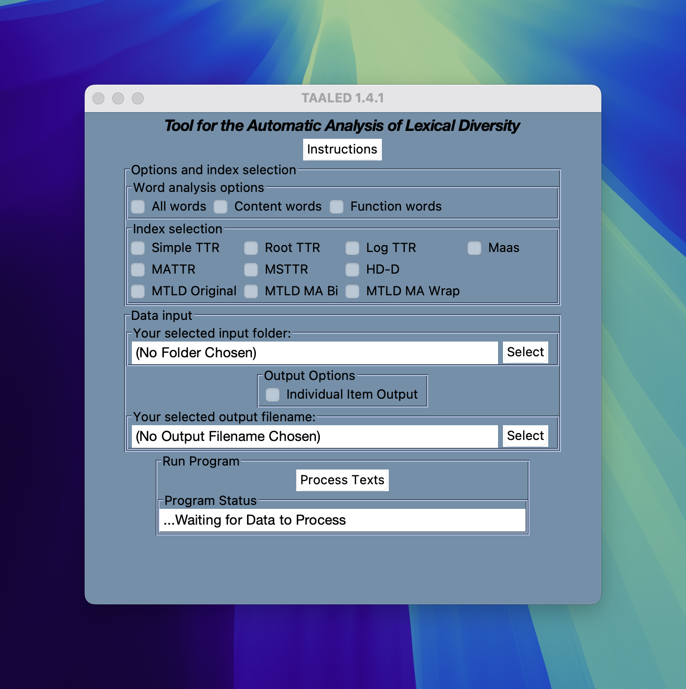

By the end of this session, you will be able to:
- Compute simple lexical diversity measures using spreadsheet software
- Compute advanced lexical diversity measures using TAALED
- Explain how modern lexical diversity measures are calculated
- Calculate simple lexical sophistication measures using dedicated web application
- Describe how lexical sophistication measures behave on a single input text.
- Discuss benefits and drawbacks of lexical richness measures.
In this presentation, I will use the following terms:
frequency score from the list
Cound the type and token of the following texts.
| ID | Text |
|---|---|
| Text 1 | “The dog ran. The dog jumped. The dog played. The dog barked. The dog ran again and jumped again.” |
| Text 2 | “A curious fox trotted briskly through the meadow, leaping over mossy logs, sniffing wildflowers, and vanishing into golden twilight.” |
Note : Texts were generated by GPT for illustration purposes.
| ID | Text | Token | Type |
|---|---|---|---|
| Text 1 | “The dog ran. The dog jumped. The dog played. The dog barked. The dog ran again and jumped again.” | 19 | 8 |
| Text 2 | “A curious fox trotted briskly through the meadow, leaping over mossy logs, sniffing wildflowers, and vanishing into golden twilight.” | 19 | 19 |
Note : Texts were generated by GPT for illustration purposes.
| ID | Text | Token | Type |
|---|---|---|---|
| Text 1a | “The dog ran. The dog jumped. The dog played. The dog barked. The dog ran again and jumped again.” | 19 | 8 |
| Text 1b | “The dog ran. The dog jumped. The dog barked. The dog played. The dog ran quickly. The dog jumped so high. The dog barked very loudly. The dog played, sat, and rolled. The dog sneezed. The dog ate the food.” | 40 | 18 |
| Text 1c | “The parrot squawked loudly. The parrot chirped again. A toucan perched nearby. The parrot fluttered. Wings flapped softly. The parrot chirped again. Feathers shimmered under sunlight. The crow cawed. The parrot glided low. The air shimmered. The owl blinked slowly. The parrot perched again. The owl blinked slowly. The parrot shrieked. The parrot chirped nearby again. The parrot squawked again.” | 60 | 27 |
Note : Texts were generated by GPT for illustration purposes.
Open Google Spreadsheet
Calculate the lexical diversity indices on the next page.
We calculate this for illustration but NEVER use these in your study.
→ These are shown as more robust indices of LD.
TAALED
Click the software icon after download
For mac users, the system will issue warning, you must follow the following step:
setting and select Privacy & SecurityOpen Anyway button.Open Anyway and that will allow Mac to open the software.You can then wait for the TAALED app to start up.
TAALED
Select the indices you need in the results. Three variants of MTLD are available.
factor, come back to the first part and complete the analysis.Individual Item Output button allows you to have POS analysisProcess Texts and wait the following display.Analysis complete
csv fileThe Raw data (if you open it with text editor) should look like the following:
filename,basic_ntokens,basic_ntypes,basic_ncontent_tokens,basic_ncontent_types,basic_nfunction_tokens,basic_nfunction_types,lexical_density_types,lexical_density_tokens,maas_ttr_aw,mattr50_aw,hdd42_aw,mtld_original_aw,mtld_ma_bi_aw,mtld_ma_wrap_aw
W_CHN_PTJ0_004_B1_2_ORIG.txt,267,124,135,75,132,49,0.6048387096774194,0.5056179775280899,0.056571333957257205,0.7793577981651377,0.7981161136859327,68.68659119235562,65.84622666144406,61.50561797752809
W_JPN_SMK0_015_B1_2_ORIG.txt,302,138,129,82,173,56,0.5942028985507246,0.4271523178807947,0.05530143602594381,0.777865612648221,0.7974803670481457,68.38677597714803,67.6645170484911,65.22185430463576There are a number of lexical sophistication measures for English (+ 300).
Operationalization means
Typically, lexical sophistication (LS) is calculated as an average:
Typical LS score = \[Total \; LS \; score \over nToken \; with \; LS \; score\]
Average is just a convenient choice.